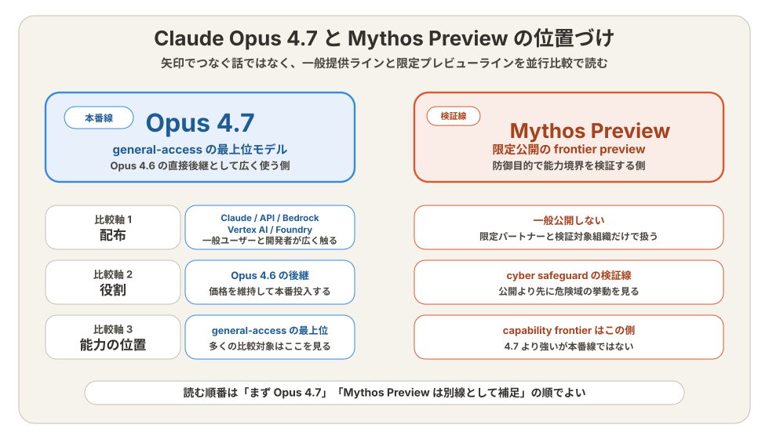
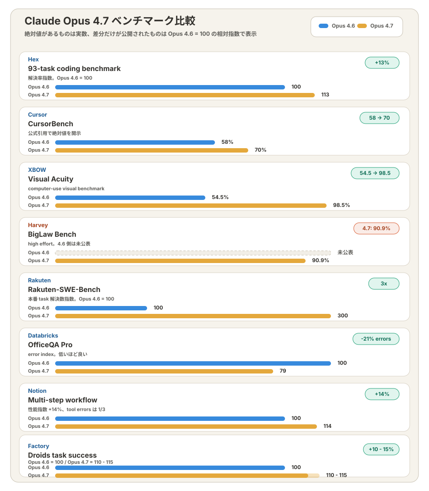
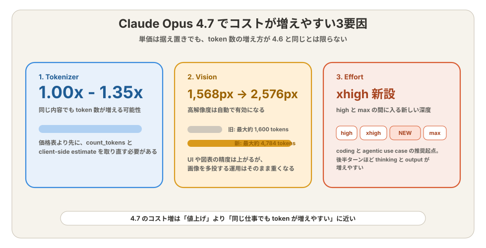
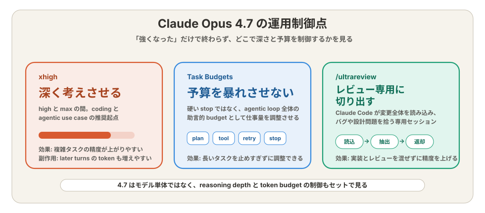

Claude Opus 4.7で何が変わった？Opus 4.6比較でわかる性能・料金・デメリット【2026年4月版】¶
対象 / ポイント
対象: Claude API / Claude Code / Claude を使い、 Opus 4.7 の性能向上とデメリットを短時間で把握したいエンジニア。
ポイント:
この記事の問い: Opus 4.7 は 4.6 よりどれだけ強くなり、 どこでコストと運用負荷が増えるのか。
位置づけ¶
4.7 は新系統なのか、それとも 4.6 の延長なのか。
結論から言えば、Opus 4.7 は Opus 4.6 の直接後継 だ。 Anthropic は 4.7 を general-access の最上位モデルと位置づけ、 価格も入力 $5 / 出力 $25 のまま据え置いた14。 Claude、Claude API、Amazon Bedrock、Google Cloud Vertex AI、 Microsoft Foundry まで同日に揃っている1。
同時に出てくる Mythos Preview は別線で読む必要がある。 Mythos Preview は Anthropic が限定公開している高能力側の preview 系統で、System Card は Opus 4.7 が Mythos Preview より弱く、 capability frontier 自体は前進させないと明記した12。 Mythos 側の背景は別稿で扱う。 つまり 4.7 は広く使う本線、Mythos Preview は safeguard を伴って 検証する先行線だ。

ここが先に分かると、読み方が変わる。問うべきなのは「4.7 へ移すべきか」より、4.6 比で何が伸び、どの負荷が増えるか になる。
何が伸びたか¶
4.6 比で、実務のどの部分が一段上がったのか。
改善の中心は、日々の開発フローに近い領域だ。 一次情報をつなぐと、4.7 は「何でも少し良くなった」モデルではなく、 コーディング、視覚入力、厳密な指示追従、長時間タスクの継続性 に的を絞った更新として読める14。
- ソフトウェア工学: Anthropic は advanced software engineering と long-running tasks を主要改善点に置いた1。動き方で見ると、
プロンプト受理 → 自己検証プラン作成 → 実行 → 結果報告の鎖が 4.6 より崩れにくくなった。 - ビジョン: 長辺 2,576px、約 3.75MP の画像に対応し、 旧モデルの 1,568px から上がった14。 密な UI や図表を読む精度は上がるが、そのぶん画像 token は増えやすい。
- 指示追従: 4.7 は 4.6 より literal に指示を解釈する14。 曖昧な依頼を勝手に補わないため、抽出や整形では利点だが、 雑なプロンプトは雑なまま返ってくる。
- ファイルシステム型メモリ: 重要メモをまたいで参照しやすくなり、 長いセッションでの文脈維持が改善した1。 Claude Code を継続運用するほど差が出やすい。
ここまでは「強くなった話」だ。次に見るべきなのは、その強化がどれだけ数字に出ているかだ。
ベンチマーク比較¶
伸びは体感ではなく、数字で見ても大きいのか。
答えは yes だ。顧客内部評価では CursorBench が 58% から 70%、 XBOW の Visual Acuity が 54.5% から 98.5% に伸びた1。 Hex は 93 タスクの coding benchmark で 4.6 比 13% 改善、 Rakuten は production task の解決数が 3 倍、 Databricks は OfficeQA Pro のエラーが 21% 減ったと述べる1。
AWS 側の標準ベンチマークでも、SWE-bench Pro 64.3%、 SWE-bench Verified 87.6%、Terminal-Bench 2.0 69.4%、 Finance Agent v1.1 64.4% と整理されている3。 つまり改善は 1 つの顧客事例に偏っていない。

数値の読み方だけ押さえると、4.7 の伸びは単発 QA より、 複数ステップをまたぐ仕事 に強く出ている。
デメリットは何か¶
性能が上がったぶん、何が重くなるのか。
最大のデメリットは、価格改定ではなく 実効 token 消費 だ。 Migration Guide は、新 tokenizer によって同じ内容でも token 数が 1.0〜1.35 倍になる可能性があると明記している4。 請求単価が同じでも、月額は同じにならない。
高解像度ビジョンもコスト側に効く。4.7 は高解像度を自動で使うため、 画像 1 枚あたりの token 数は旧モデルの最大約 1,600 から 最大約 4,784 まで増えうる4。 UI 読み取りの精度向上と引き換えに、 画像を多く投げる運用は重くなりやすい。

見直しが必要なのは次の 4 点だ4。
- client-side の token 見積もりを 4.7 前提で取り直す
max_tokensと compaction trigger を再計測する- high 以上の effort を使う場面では output token の増え方も観測する
- 4.6 時代の曖昧なプロンプトを literal 前提で書き直す
「値上げしたモデル」ではない。だが、前と同じ使い方をすると重く見えやすいモデル ではある。
どう制御するか¶
増えやすい token を、運用側でどう抑えるのか。
4.7 で重要になるのが effort だ。Anthropic は high と max の間に xhigh を新設し、coding と agentic use case の起点として 推奨した14。 ここで初めて、「なぜ 4.7 は伸びたのか」と 「なぜ token が増えやすいのか」がつながる。
制御手段も同時に増えた。Task Budgets は agentic loop 全体に対する 助言的な token 予算で、硬い打ち切りではなく、 モデルに仕事量を調整させる仕組みだ4。 Claude Code の /ultrareview は、差分全体を読んで バグや設計問題を洗う専用レビューセッションとして追加された1。

最小の API 差分はこの形になる。 4.7 では enabled thinking が廃止され、 adaptive thinking と effort を明示する4。
from anthropic import Anthropic
client = Anthropic()
message = client.messages.create(
model="claude-opus-4-7",
max_tokens=64000,
thinking={"type": "adaptive", "display": "summarized"},
output_config={"effort": "xhigh"},
messages=[{"role": "user", "content": "Review this diff and list bugs."}],
)
運用の勘所は 1 つだ。難しい仕事は 4.7 に任せやすくなったが、深く考えさせるほど予算管理もセットで要る。
安全性と Mythos の意味¶
なぜ Anthropic は Mythos ではなく、先に 4.7 を広く出したのか。
公式の答えは cyber risk にある。Anthropic は Project Glasswing を踏まえ、 Mythos Preview は限定公開のままにし、新しい cyber safeguard は 能力の低い Opus 4.7 で先に一般運用すると説明した1。 System Card も、4.7 は Mythos Preview より弱く、 catastrophic risk は low の範囲だと整理している2。
改善点も明示されている。悪意ある agentic request の拒否、 prompt injection 耐性、hallucination rate の低下は 4.6 比で前進した2。 一方で、規制薬物の harm-reduction 文脈では 詳細すぎる回答を返す傾向が残ると報告されている2。
この dual-track は少し分かりにくいが、意味ははっきりしている。一般提供で使う本線は Opus 4.7、より高能力な frontier 検証線は Mythos Preview だ。
まとめ¶
Opus 4.7 は、4.6 の単純な上位互換ではない。 コーディング、ビジョン、長い workflow では明確に強くなった一方、 tokenizer、高解像度画像、high 以上の effort が コスト側に跳ね返る14。 一次情報を踏まえると、まず見るべきは「移行手順」ではなく、 性能差と token 差がどの workload で大きいか になる。
関連記事¶
Anthropic, "Introducing Claude Opus 4.7", 2026-04-16. https://www.anthropic.com/news/claude-opus-4-7 ↩↩↩↩↩↩↩↩↩↩↩↩↩↩↩↩
Anthropic, "Claude Opus 4.7 System Card", 2026-04-16. https://www.anthropic.com/claude-opus-4-7-system-card ↩↩↩↩
AWS, "Introducing Anthropic’s Claude Opus 4.7 model in Amazon Bedrock", 2026-04-16. https://aws.amazon.com/blogs/aws/introducing-anthropics-claude-opus-4-7-model-in-amazon-bedrock/ ↩
Anthropic, "Migration guide", accessed 2026-04-17. https://platform.claude.com/docs/en/about-claude/models/migration-guide#migrating-to-claude-opus-4-7 ↩↩↩↩↩↩↩↩↩↩↩↩↩↩